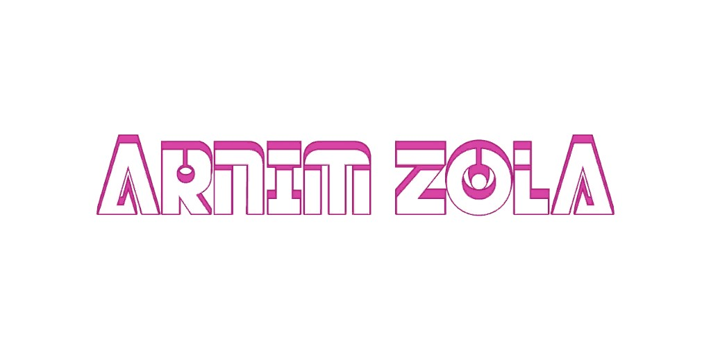
Arnim Zola (Terre-616)
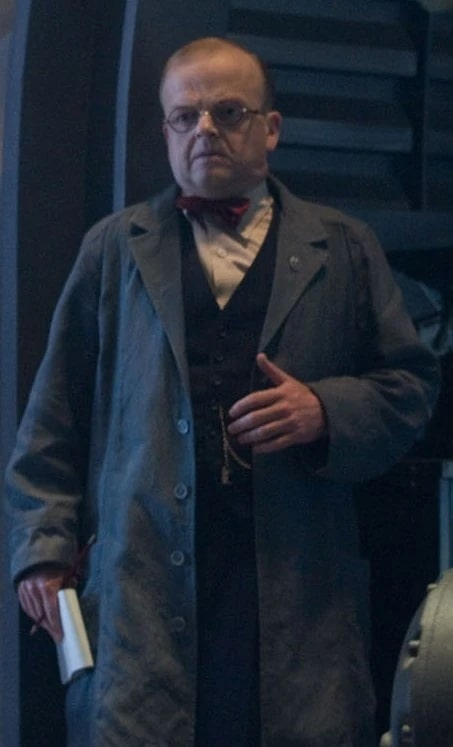
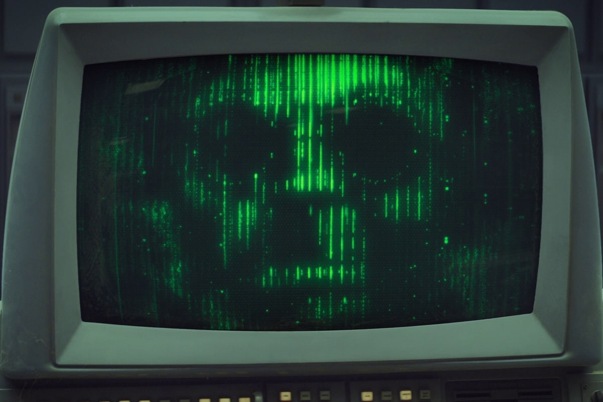
Origines :
Arnim Zola était un biochimiste suisse durant la Seconde Guerre mondiale, qui devint l'un des premiers humains génétiquement modifiés.
Ses travaux se basèrent sur des études menées sur les documents de la race des Déviants.
Le parti nazi l'embaucha pour faire des Allemands une race supérieure.
Crâne Rouge finança certains de ses travaux.
Une de ses plus brillantes inventions fut un appareil permettant de transférer l'essence d'un individu vers un cerveau cloné.
Un clone d'Adolf Hitler devint grâce à ceci le Maître de la Haine (Hate-Monger).
Zola utilisa aussi ses connaissances pour se construire un corps robotique et échapper aux ravages du temps en transférant sa conscience à l'intérieur.
Il fut arrêté dans ses projets par Captain America, mais ne fut pas retrouvé à la fin de la guerre.
Réfugié dans les jungles de l'Amérique du Sud, il poursuivit ses travaux en abandonnant ses idées d'eugénisme nazi.
En plus du Maître de la haine, Arnim Zola a créé les super vilains Primus et Doughboy, ainsi que la jeune Jolt des Thunderbolts, et de nombreux clones qui furent détruits par Deadpool.
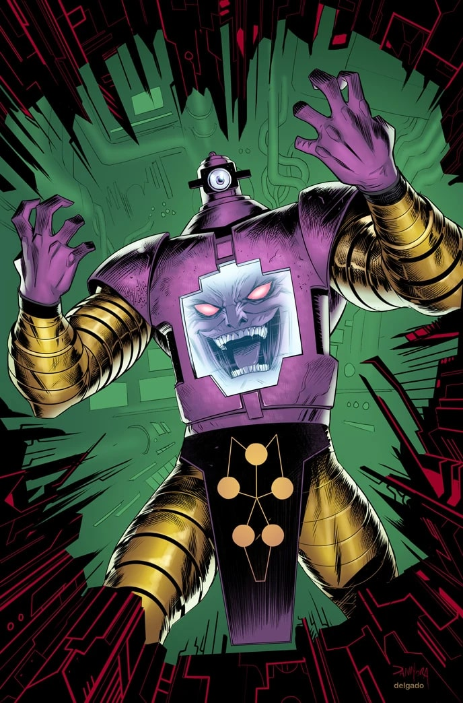
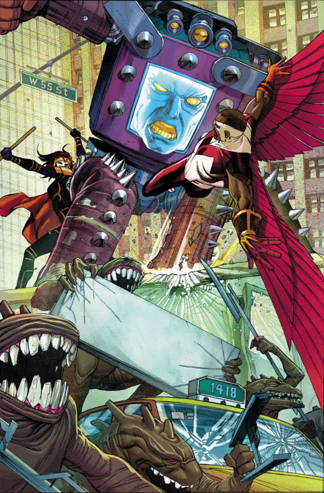
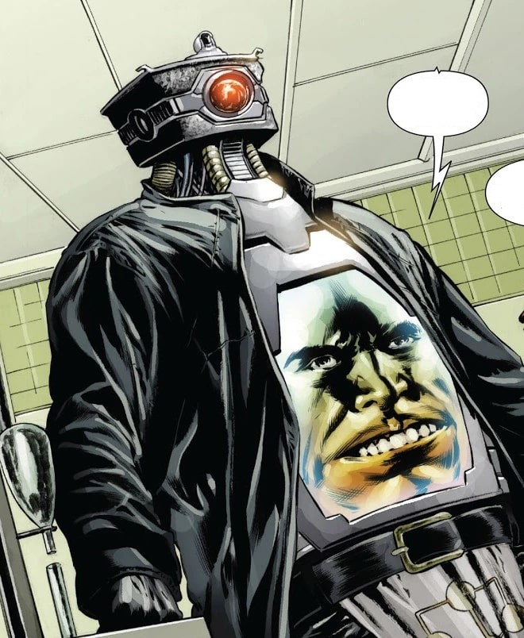
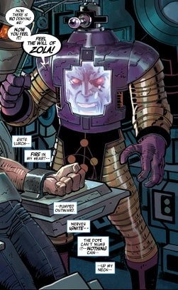
Capacités :
Arnim Zola est un scientifique et biochimiste de génie, particulièrement doué en génétique et en clonage.
Pour résister à la vieillesse, il a transféré son esprit dans un corps robotique, sans tête.
Son essence vitale est contenue dans le buste du robot, dans une sorte d'ordinateur géant.
Un harnais électronique sur le buste du robot fait apparaître son visage en hologramme.
Sa carapace de métal abrite une boîte de perception extrasensorielle, qui convertit les informations télépathiques en informations sensorielles, lui permettant de voir et d'entendre normalement.
Il peut également affaiblir la volonté de ses cibles en leur envoyant un rayonnement d'ondes.

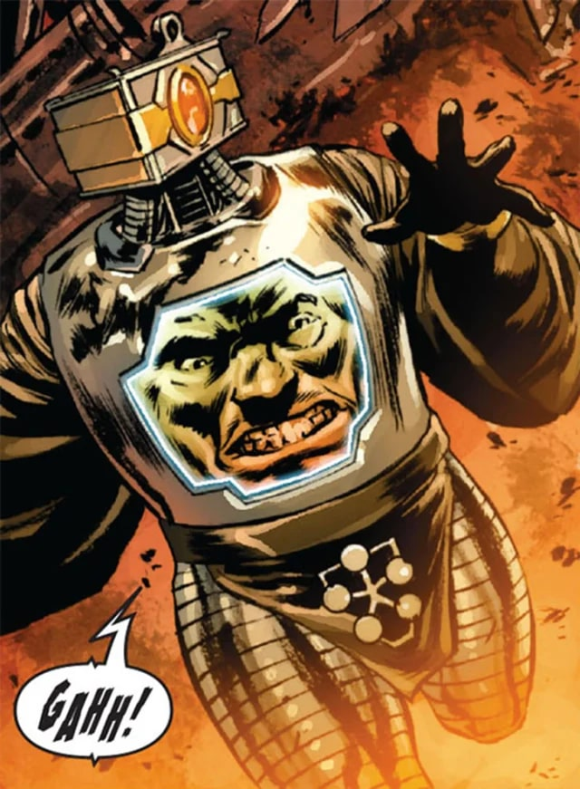
Apparence :
Arnim Zola est un robot, souvent à l'apparence humanoïde, avec des bras et des jambes.
Il n'a pas de tête à proprement parlé, mais un boîtier ressemblant à une caméra.
Son visage humain est projeté sur un écran, placé sur son torse.
Équipes affiliées

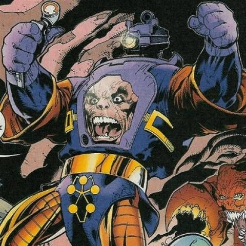
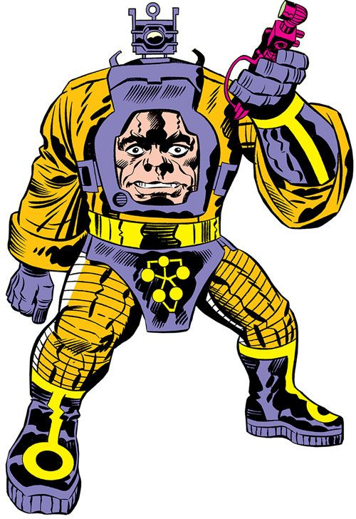
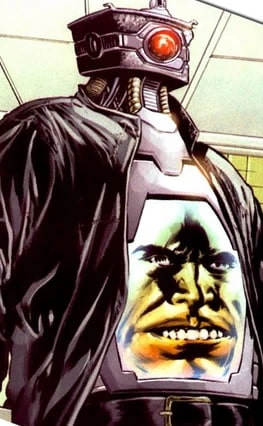
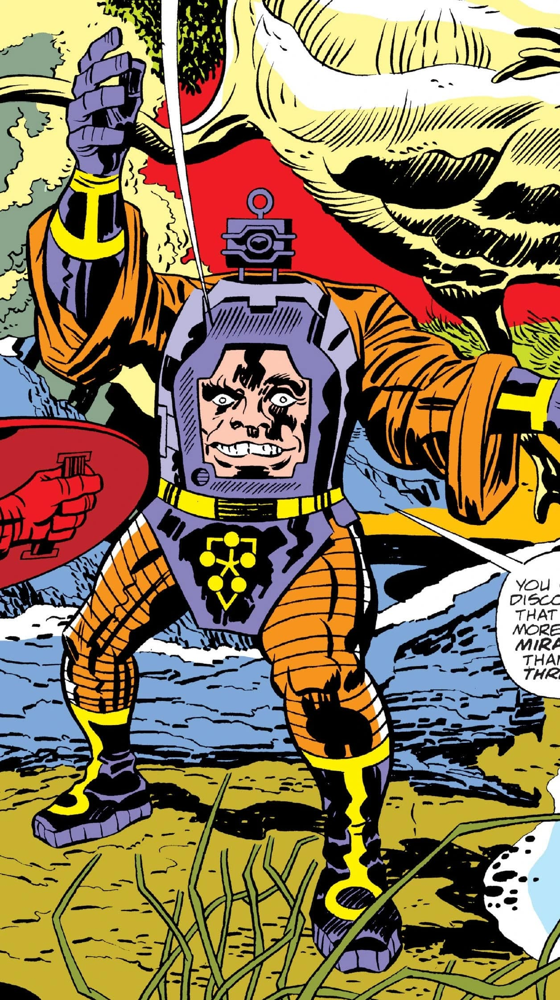
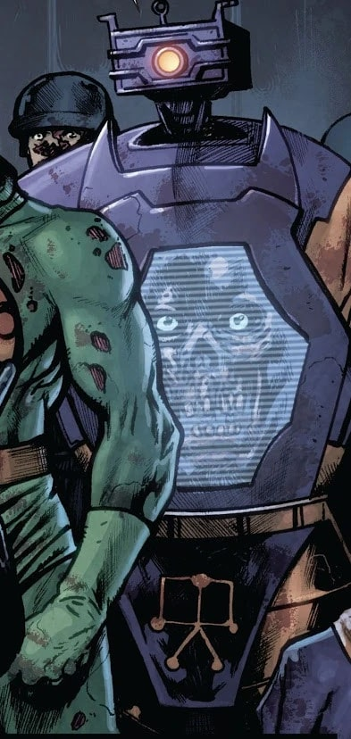
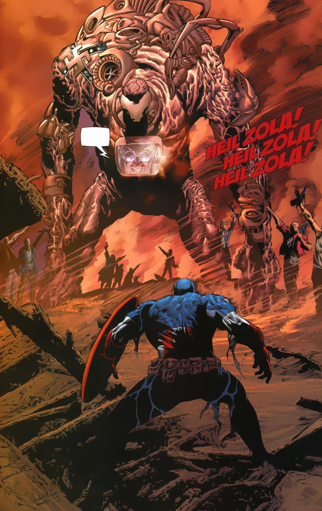
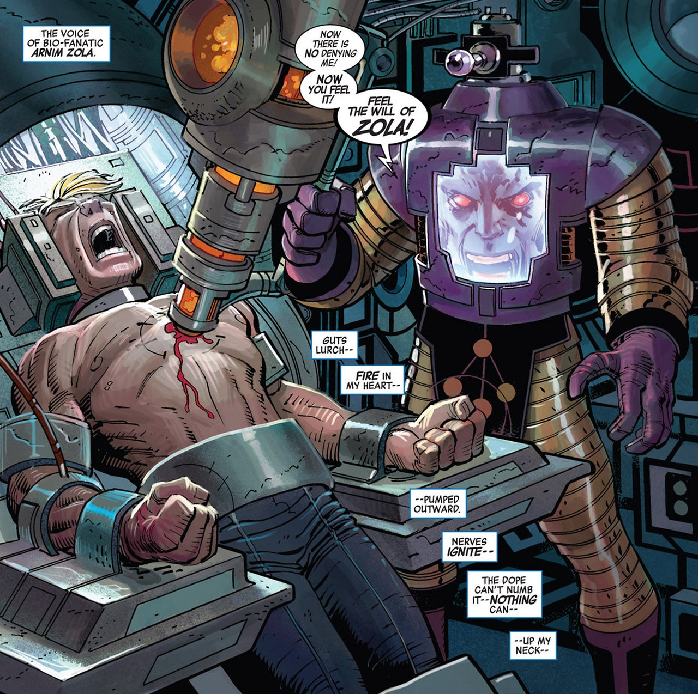
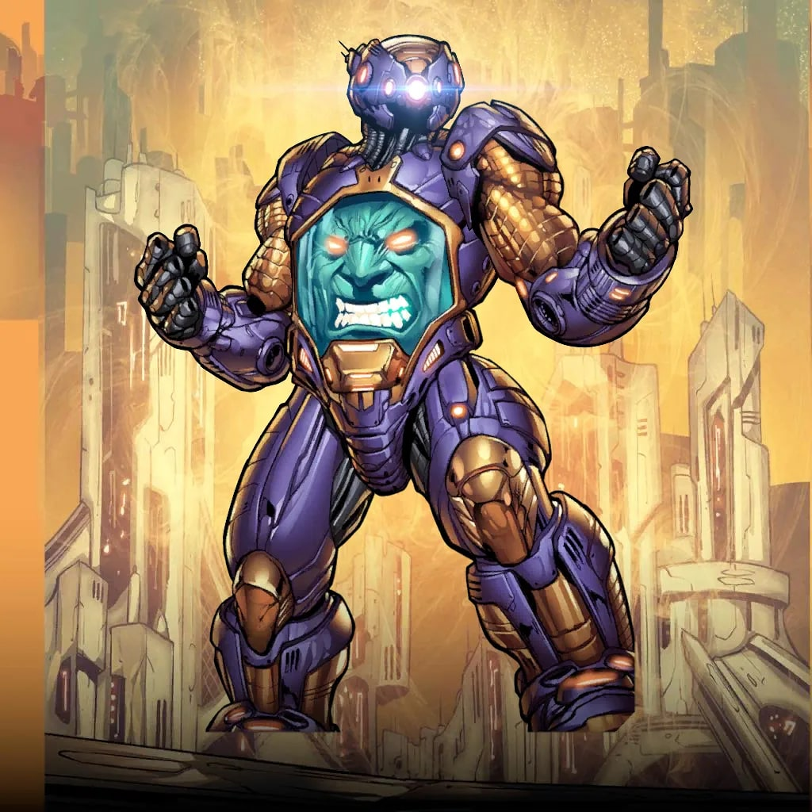
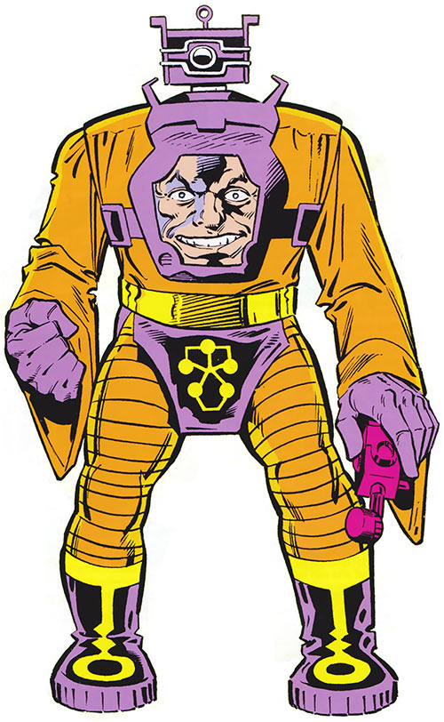

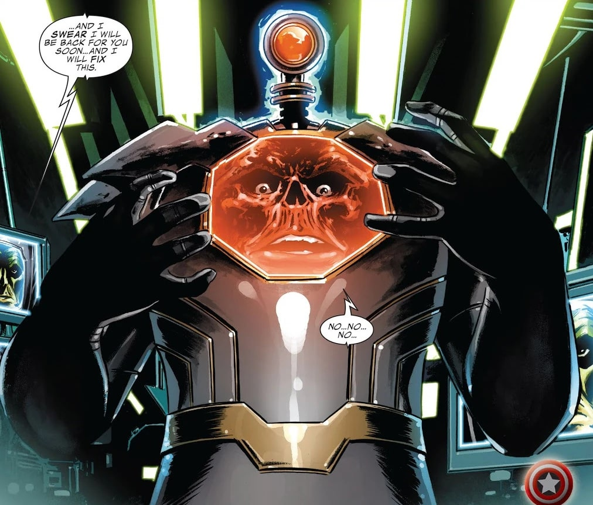